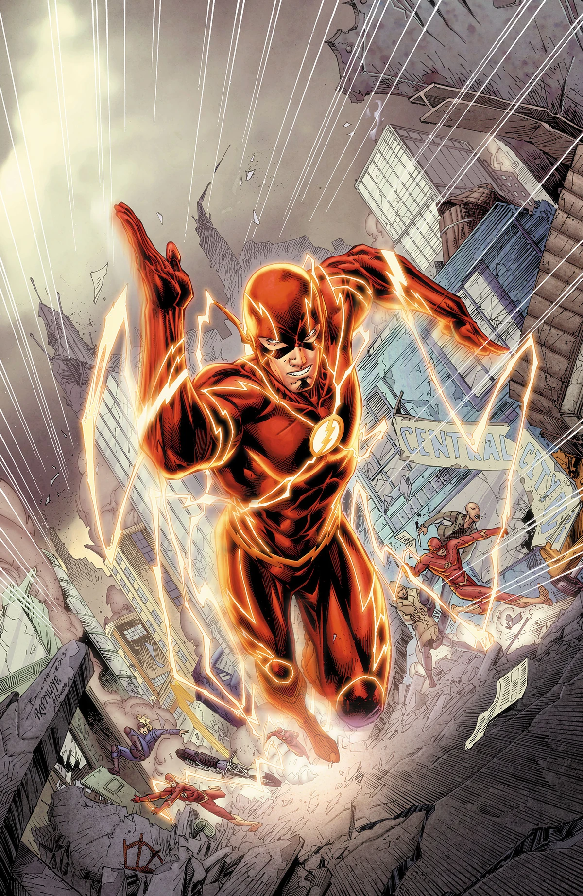
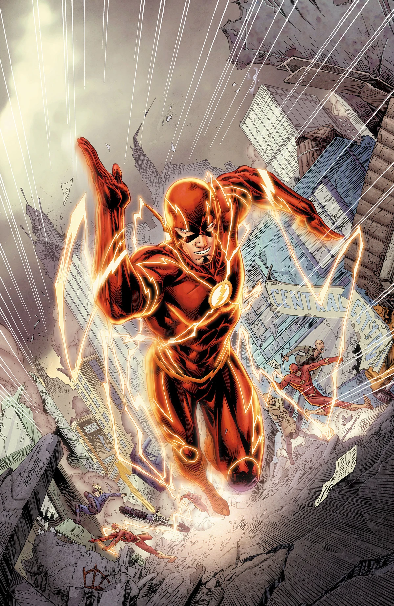

Flash é um super-herói que luta contra o crime e protege a cidade de Central City.
Ele é conhecido por sua velocidade incrível e sua habilidade de viajar no tempo.
O Homem Mais Rápido do Mundo.
Notícias recentes sobre o Flash:
Flash impede assalto em segundos no centro de Central City!
Data: 12/01/2026
Resumo: O herói mais rápido do mundo agiu em frações de segundo para impedir um assalto a banco em Central City. Antes mesmo que os criminosos percebessem, já estavam imobilizados e entregues às autoridades.
Flash salva passageiros de trem prestes a descarrilar!
Data: 25/01/2026
Resumo: Uma falha nos trilhos quase causou um grave acidente ferroviário. Utilizando sua supervelocidade, Flash removeu os passageiros e estabilizou o trem a tempo de evitar uma tragédia
Barry Allen visita escola e inspira futuros cientistas!
Data: 02/02/2026
Resumo: Fora do uniforme, Barry Allen participou de uma palestra sobre ciência forense e responsabilidade social. Os estudantes ficaram encantados com as histórias de superação e dedicação à justiça.
Flash derrota Capitão Frio em confronto eletrizante! Data: 10/02/2026 Resumo: Em mais um embate contra o vilão Capitão Frio, Flash precisou usar estratégia além da velocidade. O confronto terminou com o criminoso capturado e a cidade mais uma vez protegida.
Laboratório S.T.A.R. Labs é salvo de explosão iminente!
Data: 18/02/2026
Resumo: Um experimento instável ameaçou causar uma grande explosão no S.T.A.R. Labs. Flash entrou em ação e conseguiu conter a reação em cadeia antes que danos maiores ocorressem.
Flash impede pane geral de energia em Central City!
Data: 01/03/2026
Resumo: Um ataque ao sistema elétrico da cidade quase deixou milhares de moradores sem energia. Correndo contra o tempo, Flash restaurou os geradores e evitou o caos.
Flash ajuda a Liga da Justiça em missão internacional! Data: 12/03/2026 Resumo: O velocista escarlate foi convocado para auxiliar a Liga da Justiça em uma ameaça global. Sua rapidez foi essencial para neutralizar o perigo antes que se espalhasse.
Flash organiza campanha solidária para vítimas de enchente! Data: 20/03/2026 Resumo: Mostrando que heroísmo vai além da supervelocidade, Flash liderou uma campanha de arrecadação para famílias afetadas por enchentes. A mobilização bateu recordes de doações.